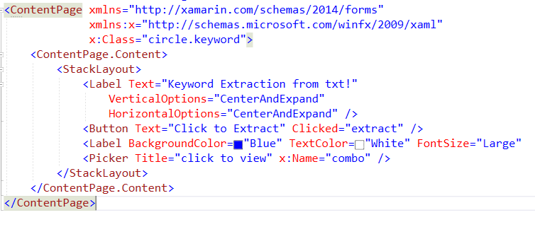
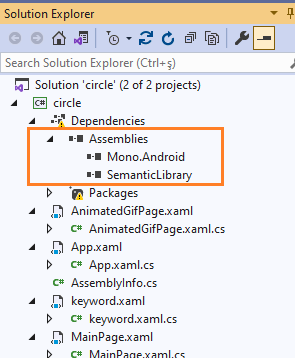
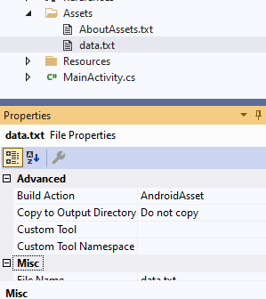

In this article, we see how to extract keywords from a .txt file in Android. To this end, a Xamarin Form design is utilized in Visual Studio 2019. 1. First, and foremost, we should be aware of using Android SDK. 2. In Visual Studio, create a blank Xamarin Form application, In .xaml page should include two items including a label and a button as below.
 We should add SemanticLibrary and Mono.Android as below: To extract keywords, SemanticLibrary is needed. You can find the library below.
Semantic Libraryusing System; using System.Collections.Generic; using System.Linq; using System.Text; using System.Threading.Tasks; using System.IO; using Xamarin.Forms; using Xamarin.Forms.Xaml; using SemanticLibrary; using System.Collections.ObjectModel;
Following function creates keywords from data.txt that we should add to Asset folder and change its property as AndroidAsset as below. You can write something in .txt  async void extract(object sender, EventArgs args) { var stream = Android.App.Application.Context.Assets.Open("data.txt"); StreamReader sr = new StreamReader(stream); string text = sr.ReadToEnd(); KeywordAnalyzer ka = new KeywordAnalyzer(); var g = ka.Analyze(text); string wordList = ""; foreach (var key in g.Keywords) { combo.Items.Add(key.Rank.ToString()); combo.Items.Add(key.Word.ToString()); wordList += ((int)key.Rank).ToString() + Environment.NewLine; wordList += key.Word.ToString() + Environment.NewLine; } combo2.Text = wordList; }
The complete form of the xaml.cs file is presented below.